Spain —
Gaudí, the Bernabéu and karaoke on the Fuengirola seafront
Spain has been part of our lives for as long as we can remember — from family summers on the Costa del Sol as teenagers to Nicola's solo trip to Barcelona in 2016, the Bernabéu stadium tour in Madrid in 2011 and three visits to Fuengirola with friends. Spain keeps pulling us back. The tapas, the sunshine, the beaches, the character of the cities — and St Patrick's Bar in Fuengirola, where Padraig once blasted out the Cranberries at karaoke to a very appreciative seafront crowd. 😄
Fuengirola — the Costa del Sol town we keep going back to
Fuengirola sits on the Costa del Sol between Málaga and Marbella and has become our favourite Spanish town for a reason. It is big enough to have everything you need — shops, restaurants, bars, markets — but retains more genuine Spanish character than some of the larger, more heavily touristed resorts along the coast. The beach is gorgeous: a long, wide sandy stretch with clear water and plenty of space.
Most recently in 2024, Nicola and Padraig visited for the third time to see friends who are based in the area. The Costa del Sol has a large expat and Irish community and that warmth and familiarity is part of what makes it so easy to come back to. The tapas is beautiful — Spain is one of the best countries in Europe for naturally gluten-free food and the variety available is extraordinary.
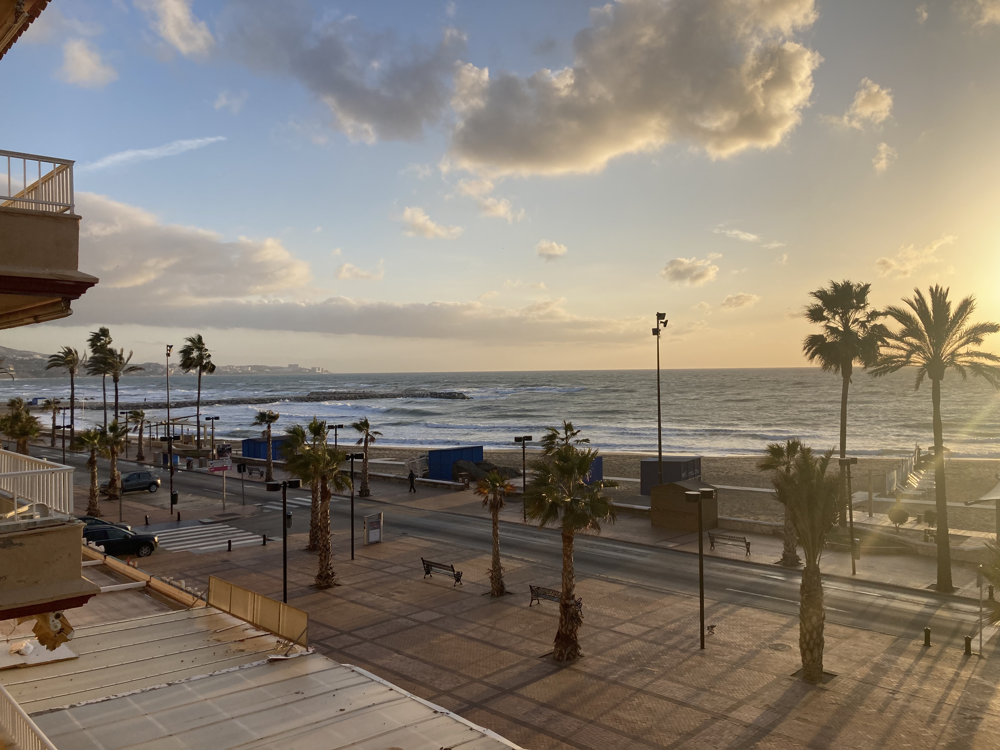
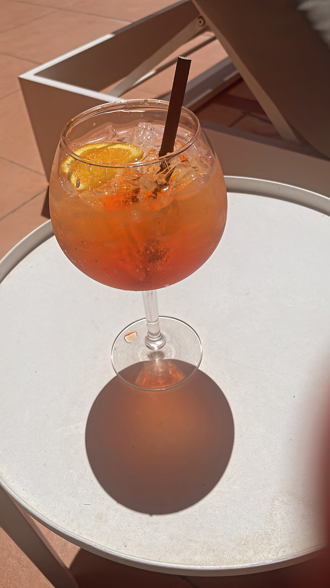
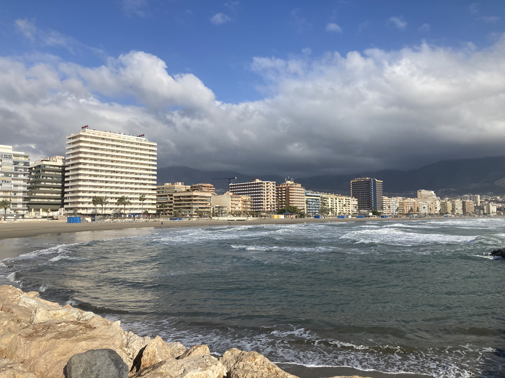
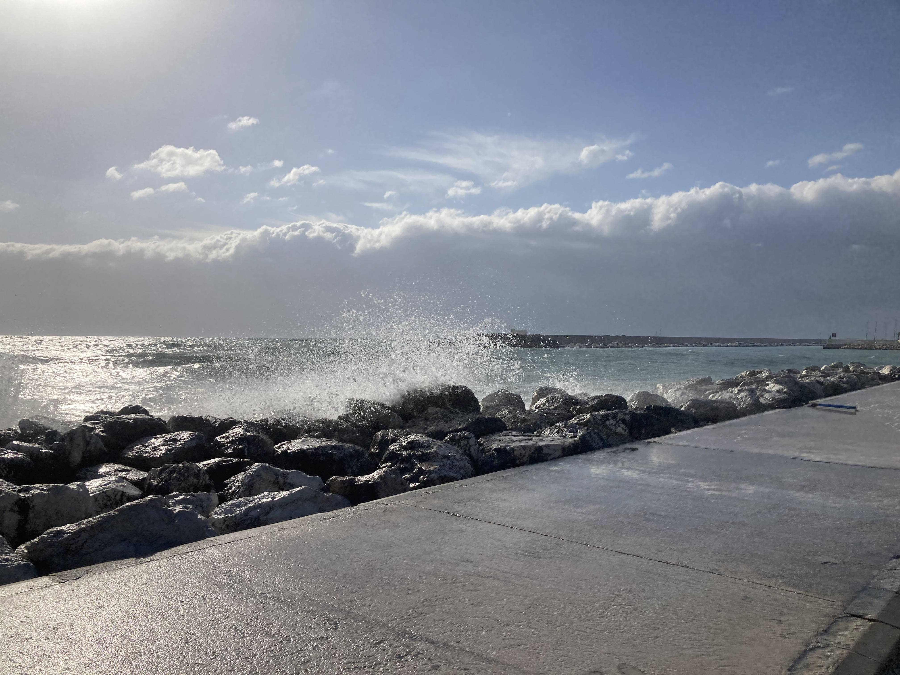
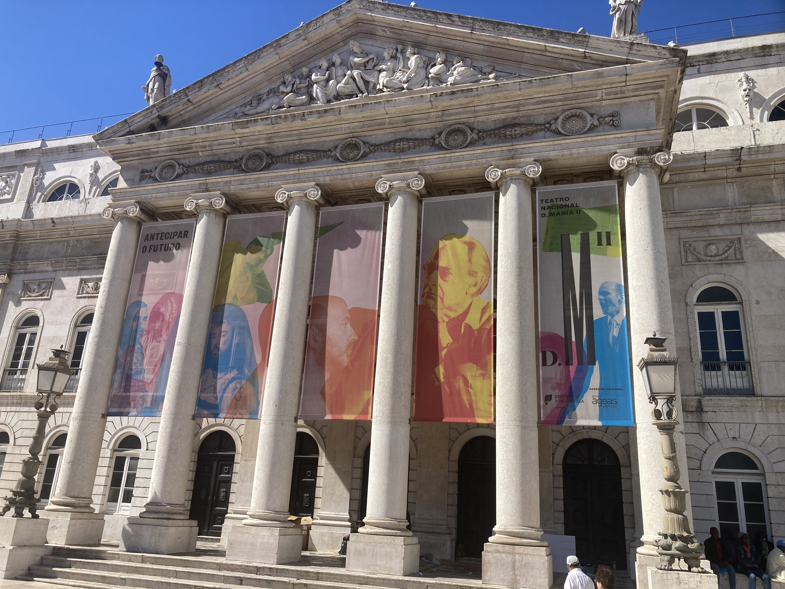
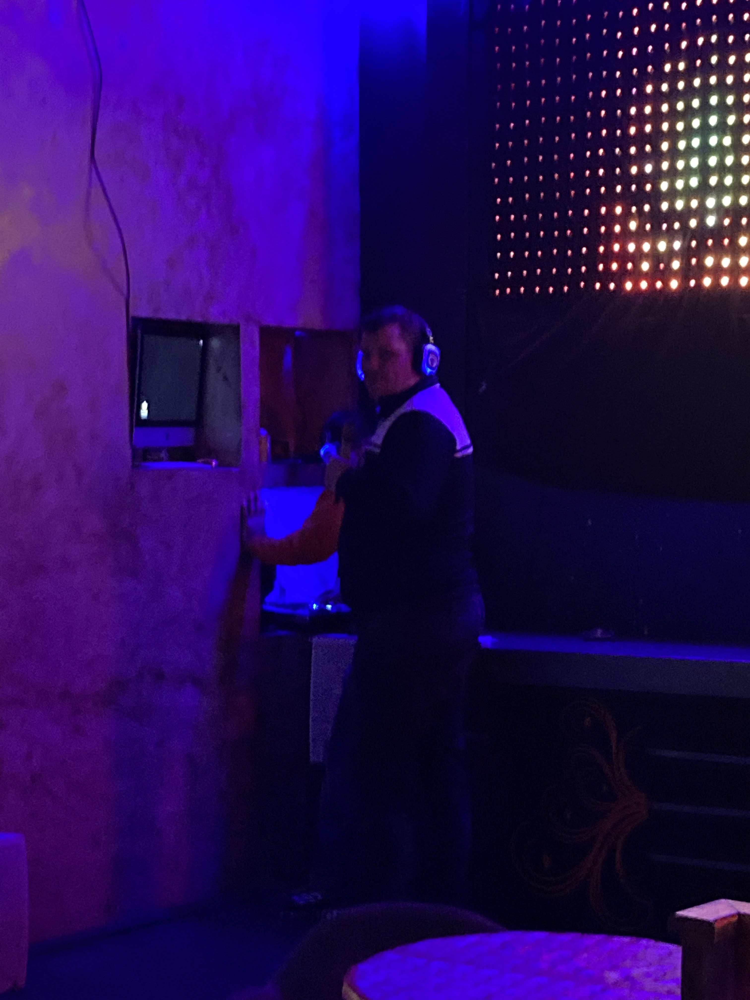
Fuengirola — our reel
Barcelona — four nights of Gaudí, beaches and the Gothic Quarter
Nicola visited Barcelona in 2016 with a friend for four nights — and it delivered on every level. Barcelona is one of those rare cities that has everything: extraordinary architecture, a beautiful beach right in the city, a brilliant food scene, a lively nightlife and an atmosphere that is completely its own. It does not feel like the rest of Spain. It feels like Barcelona.
What to see in Barcelona
Gaudí's extraordinary unfinished masterpiece — under construction since 1882 and still not complete. The facade, the interior light, the sheer ambition of the design is breathtaking. Book tickets well in advance. The queues without a ticket are enormous.
Gaudí's colourful mosaic park overlooking Barcelona — one of the most iconic viewpoints in the city. The terraced area with its famous mosaic bench and views over the city is stunning. Book timed entry tickets in advance.
Barcelona's famous tree-lined boulevard running from Plaça de Catalunya to the waterfront. Always busy, always full of life. The Mercat de la Boqueria market just off La Rambla is a food lover's paradise.
Barcelona's most elegant boulevard — home to Gaudí's Casa Batlló and Casa Milà (La Pedrera), as well as the stunning Casa Amatller. A walk along here is one of the great architectural experiences in Europe.
The Gothic Quarter — a medieval labyrinth of narrow streets, hidden squares and ancient buildings in the heart of the old city. Easy to get lost in. Very worth getting lost in.
One of the great things about Barcelona — a proper city beach right in the city. After a day of sightseeing, finishing on the sand with the Mediterranean in front of you is a genuinely wonderful thing.
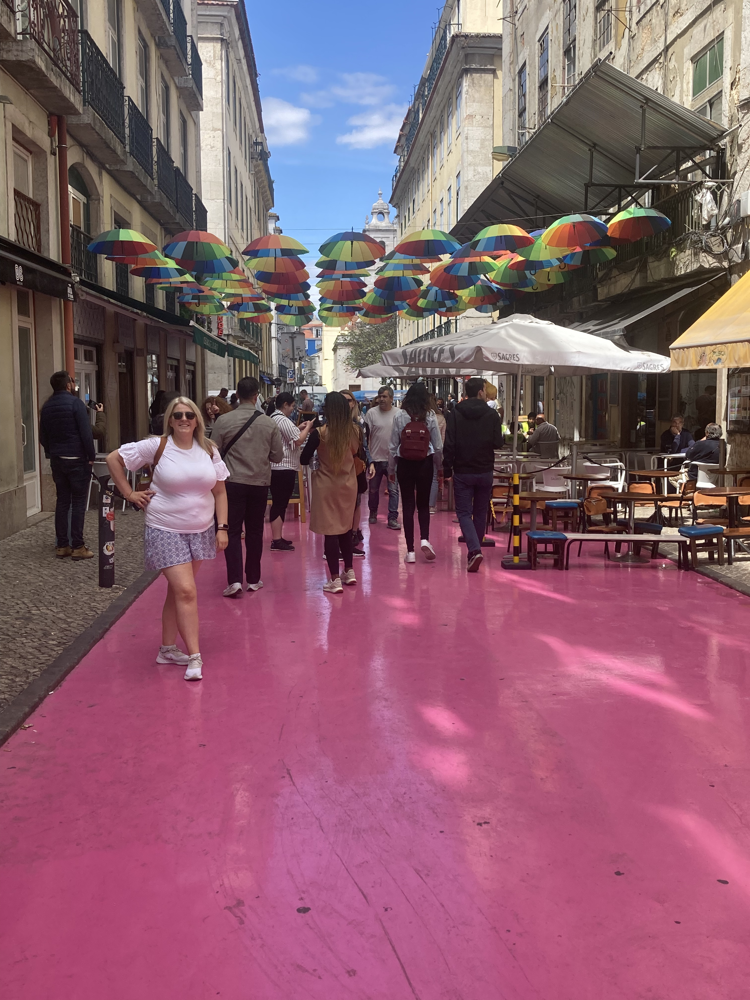
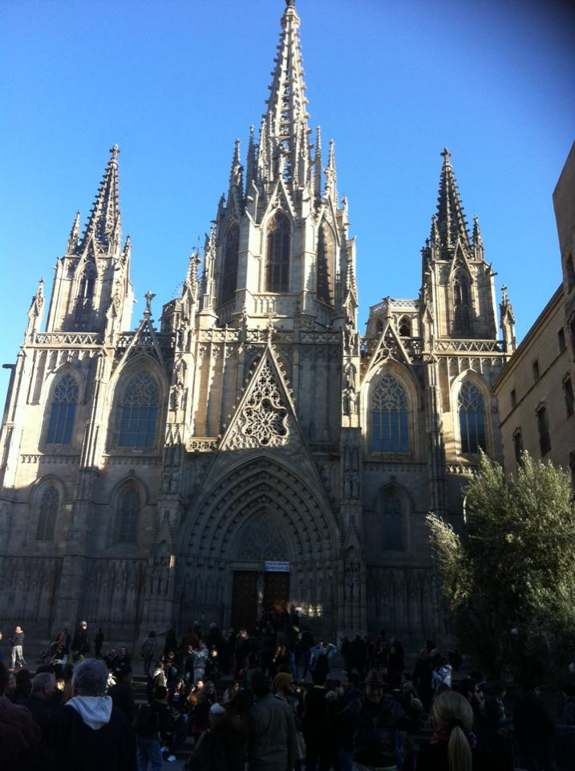
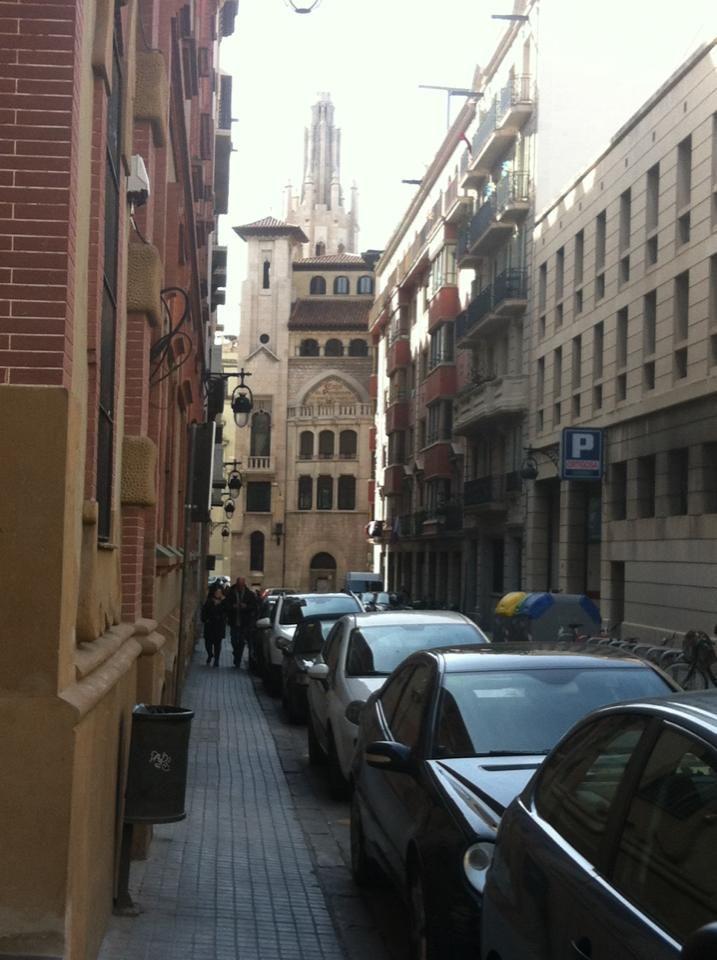
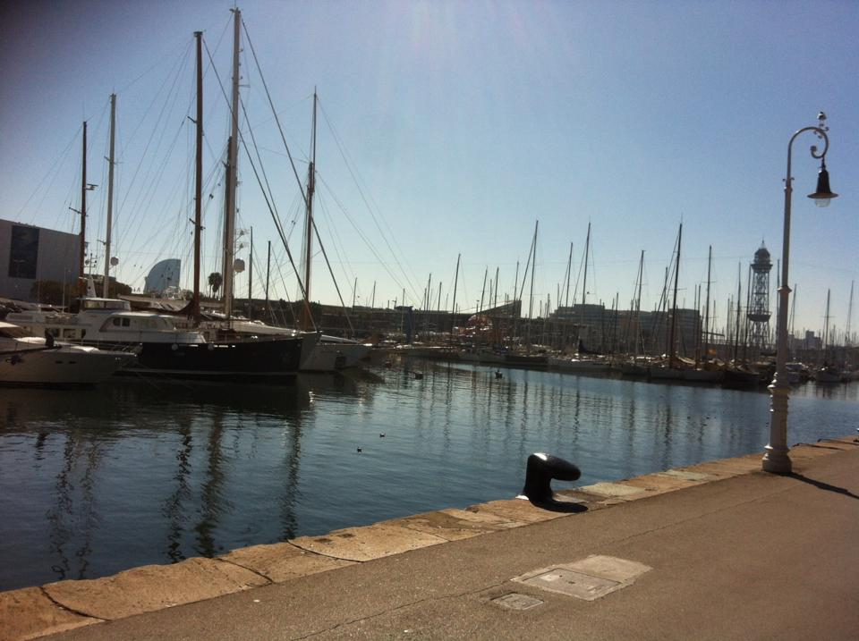
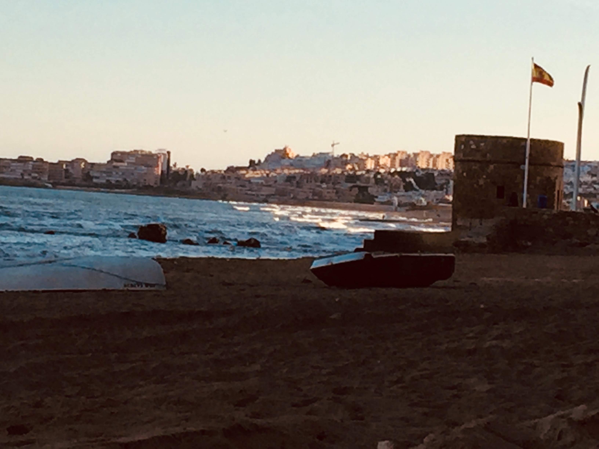
Madrid — the Bernabéu, the Prado and the grand boulevards
Nicola visited Madrid in 2011 with a friend — and the Spanish capital delivered everything a great European city should. Grand boulevards, world-class museums, brilliant tapas, the Retiro park and the Bernabéu stadium tour that surprised everyone by being genuinely interesting regardless of football knowledge.
What to see in Madrid
Even with zero interest in football, the Bernabéu stadium tour is worth doing. The scale of the stadium, the trophy room, the history and the sense of what this club means to the city is genuinely impressive. One of the most visited attractions in Madrid for good reason.
The official residence of the Spanish Royal Family — one of the largest royal palaces in Europe. The grand state rooms, the throne room and the collections inside are extraordinary. The gardens and the views from the terrace are worth the visit alone.
One of the great art museums of the world — Velázquez, Goya, El Greco and Rubens all represented with extraordinary collections. Even a few hours barely scratches the surface. Essential for any Madrid visit.
Madrid's beautiful central park — a green oasis in the heart of the city with a stunning glass palace, a boating lake, sculptures and locals enjoying the sunshine. Perfect for an afternoon wander.
The twin hearts of Madrid — Puerta del Sol is the city's central square and meeting point, while Plaza Mayor is one of the most elegant grand squares in Europe. Both are perfect for people-watching over a coffee.
Madrid's most famous food market — a stunning iron and glass structure filled with the best of Spanish food. Tapas, jamón, seafood, wine and vermouth. A brilliant stop for lunch or an early evening grazing session.

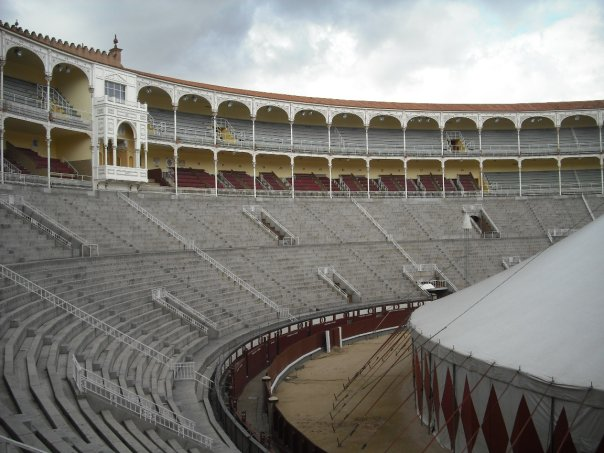
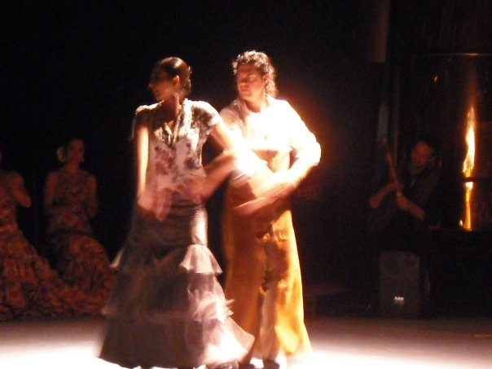
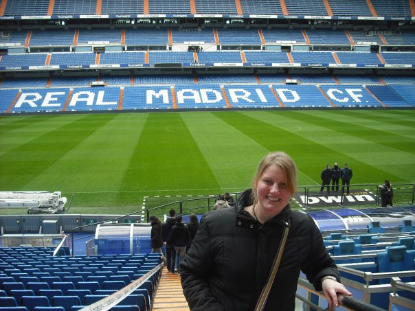
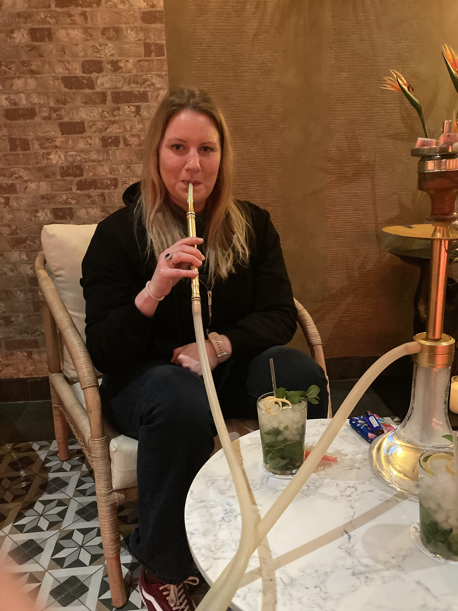
The Costa del Sol — where it all started
The Costa del Sol was the family holiday destination growing up — Málaga, the surrounding towns, the reliable sunshine and the beautiful beaches of southern Spain. It is where a lot of Irish people fall in love with Spain for the first time, and it is easy to understand why. The coast is stunning, the weather is dependable and the food — particularly the seafood — is exceptional.
Torrevieja and Salinas on the Costa Blanca are both gorgeous — Torrevieja has a beautiful beach and a brilliant bar and restaurant scene, while Salinas is quieter and lovely for a more relaxed stop. Alicante is a brilliant city with a stunning old town and castle above the port. Málaga — Picasso's birthplace — has reinvented itself as one of Spain's most culturally interesting cities and deserves much more than a transfer stop.


Spain — one of the best countries in Europe for gluten-free
Spanish cuisine is built around naturally gluten-free ingredients and Spain is one of the most manageable European destinations for coeliac travellers. The tapas culture is particularly good — most traditional tapas dishes are naturally gluten-free and the variety means you can always find something safe and delicious.
Book a Spain tour through TourRadar
Spain covers an enormous amount of ground — from the cities of Barcelona, Madrid and Seville to the coast, the islands and the incredible variety in between. A guided tour takes the stress out of planning and means you see far more than you would independently.
Disclosure: Affiliate links — if you book through them we may earn a small commission at no extra cost to you.
Things to do in Spain — via GetYourGuide
Sagrada Família skip-the-line tickets, Bernabéu stadium tours, Barcelona city tours, Madrid food tours, Alhambra visits and more:
Disclosure: If you book through these links we may earn a small commission at no extra cost to you.
Common questions
Spain FAQ
What to pack for Spain
Spain packing essentials
Whether you're exploring Barcelona's architecture, walking Madrid's grand boulevards or lounging on the Costa del Sol — these are the essentials.
Essential on the Costa del Sol especially — the Spanish sun is strong and you will be outdoors a lot.
View on Amazon →Barcelona and Madrid both demand a lot of walking — cobbled streets, hills and long days on your feet.
View on Amazon →Stay connected across Spain without roaming charges — essential for maps and navigation.
View on Amazon →Long days sightseeing in Barcelona and Madrid drain batteries fast — keep one charged.
View on Amazon →For outdoor sightseeing and beach days on the Costa del Sol — the sun is strong from April through October.
View on Amazon →Spain uses Type C and F plugs — different to Ireland. Don't get caught out on arrival.
View on Amazon →Disclosure: These are Amazon affiliate links. If you buy through them we may earn a small commission at no extra cost to you.
Planning your own Spain trip?
Book the Sagrada Família in advance. Do the Bernabéu tour even if you hate football. Eat the tapas. And if you end up in Fuengirola — find St Patrick's Bar and see what happens at karaoke night. 😄
Affiliate disclosure: if you book through our links we may earn a small commission at no cost to you.